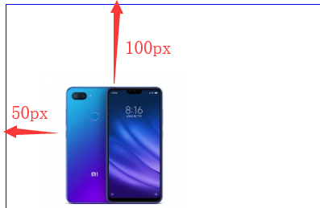

原文连接:https://www.cnblogs.com/xujunkai/p/10993083.html
Web前端篇：CSS常用格式化排版、盒模型、浮动、定位、背景边框属性
1.常用格式化排版
1.字体的属性
设置字体属性：
body{font-family:"Microsoft Yahei"} body{font-family:"Microsoft Yahei","宋体","黑体"} #备选字体可以有无数个，那么浏览器在去解析这个代码的时候，是从左往右解析的，如果没有微软雅黑，再去找宋体，最后黑体。字体大小：
- 最常用的像素单位：px、em、rem，这里咱们先介绍一种单位，px。
- px:像素是指由图像的小方格组成的，这些小方块都有一个明确的位置和被分配的色彩数值，小方格颜色和位置就决定该图像所呈现出来的样子。
字体颜色：
- 颜色表示方法在css中有三种方式：
- 英文单词表示法：red/green/blue
- rgb表示法
- 十六进制表示法
- 颜色表示方法在css中有三种方式：
字体样式font-style
网站中的字体分为了普通字体和斜体字体，我们可以使用font-style属性来设置对应的字体样式。
normal正常,italic斜体,oblique斜体
<!DOCTYPE html> <html lang="en"> <head> <meta charset="UTF-8"> <title>Title</title> <style> p{ font-style:italic; } </style> </head> <body> <p>你好</p> </body> </html>
字体粗细
font-weight
属性值 描述 normal 普通的字体粗细，默认 bold 加粗的字体粗细 lighter 比普通字体更细的字体 bolder 比bold更粗的字体 100~900 400表示normal
文本属性：
text-decoration
属性值 描述 none 无文本的修饰 underline 文本下划线 overline 文本上划线 line-through 穿过文本的线， 可以模拟删除线。
文本缩进
- 我们通常写文章的时候，首字母要空两格。那么我们需要使用
- text-indent,它的属性值是像素(px、em、rem)单位。
行间距
line-height:数值px/em
纵纹字间距/字母间距
- letter-spacing:数值px;
- word-spacing:数值px;
文本对齐
text-align
属性值 描述 left 文本左对齐，默认 right 文本右对齐 center 中心对齐
2.px,em,rem
px单位的名称为像素，它是一个固定大小的单元，像素的计算是针对（电脑/手机）屏幕的，一个像素（1px）就是（电脑/手机）屏幕上的一个点，即屏幕分辨率的最小分割。
它是相对于当前对象内文本的字体尺寸；如果没有人为设置当前对象内文本的字体尺寸，那么它相对的是浏览器默认的字体尺寸
rem只相对于根目录，即HTML元素。所以只要在html标签上设置字体大小，文档中的字体大小都会以此为参照标准，一般用于自适应布局。
<!DOCTYPE html> <html lang="en"> <head> <meta charset="UTF-8"> <title>Title</title> <style> *{ padding:0; margin:0; } html{ font-size:20px } .box{ font-size:12px; width:20rem; height:20rem; background-color: red; } </style> </head> <body> <div class="box"></div> </body> </html>
2.CSS盒模型
常用块元素由：
p,h1-h6,div,ul,ol,tr,li,form常用内联元素由：
a,span,em,i,strong,u,常见的内联块元素
input img
| 标签类别 | 特点 |
|---|---|
| 块状元素 | 1.独自占据整一行 2.可以设置宽高 |
| 内联元素 | 1.所有的内联元素在一行内显示 2.不可以设置宽高 |
| 行内块元素 | 1.在一行内显示 2.可以设置宽高 |
- 盒模型常用属性：
- 盒子模型中有四个属性：内容的宽高、内边距、外边距、边框。

1.padding
padding有四个方向，分别描述四个方向的padding。
padding-top:10px; padding-right:3px; padding-bottom:50px; padding-left:70px;综合属性，多个属性用空格隔开。
/*上 右 下 左 四个方向*/ padding: 20px 30px 40px 50px ; /*上 左右 下*/ padding: 20px 30px 40px; /* 上下 左右*/ padding: 20px 30px; /*上下左右*/ padding: 20px;
2.border
盒子模型的边框，在样式表中称为border。我们知道呢，我们用的手机，都会有手机壳。手机壳的样式、颜色、薄厚程度等都是这个壳的形态。同样呢，盒模型的边框也有三要素：粗细 线性样式 颜色。
<!DOCTYPE html> <html lang="en"> <head> <meta charset="UTF-8"> <title>border的使用</title> <style type="text/css"> .box{ width: 200px; height: 200px; /*1像素实线且红色的边框*/ border: 1px solid red; } </style> </head> <body> <div class="box"></div> </body> </html>- 按照三要素书写border
border-width:3px; border-style:solid; border-color:red; /*上面三句代码相当于一句代码：border:3px solid red;*/ /*同样,也可以分别设置边框四个方向的粗细 线性样式 颜色,跟padding的四个方向一样。*/ /*上下5px 左右10px*/ border-width:5px 10px; /*上：实现 右：点状 下：双线 左：虚线*/ border-style: solid dotted double dashed; /*上：红色 左右：绿色 下：黄色*/ border-color: red green yellow;- 按照方向划分
border-top-width: 10px; border-top-color: red; border-top-style: solid; border-right-width: 10px; border-right-color: red; border-right-style: solid; border-bottom-width: 10px; border-bottom-color: red; border-bottom-style: solid; border-left-width: 10px; border-left-color: red; border-left-style:solid; 相当于border:10px solid red;清除默认边框：border:none;或者border:0; outline:none;
3.margin
在盒子模型中称为外边距，样式表中叫margin。表示盒子到另一个盒子的距离。既然是两者之间的距离，那么就会产生水平之间的距离和垂直之间的距离。同样情况下，外边距也有四个方向，跟padding类似。
水平方向的外边距
<!DOCTYPE html> <html lang="en"> <head> <meta charset="UTF-8"> <title>水平方向外边距</title> <style type="text/css"> span:nth-child(1){ background-color: green; margin-right: 20px; } span:nth-child(2){ background-color: red; margin-left: 30px; } </style> </head> <body> <span class="box_l">左盒子</span><span class="box_r">右盒子</span> </body> </html> #nth-child(1)，获取span子类，参数为第1个。垂直方向外边距
<!DOCTYPE html> <html lang="en"> <head> <meta charset="UTF-8"> <title>Title</title> <style> div{ width: 200px; height: 200px; } #box1{ background-color: red; margin-bottom: 30px; } #box2{ background-color: black; margin-top: 100px } #box3{ background-color: yellowgreen; } #box3 p{ background-color: goldenrod; margin-top: 30px; } </style> </head> <body> <!-- margin 在垂直方向上会出现外边距合并现象，塌陷。以设置的最大的magrin距离为基准--> <div id="box1"></div> <div id="box2"></div>
注意：盒模型的外边距水平方向上不会出现问题，在垂直方向上会出现“**外边距合并**”的现象。
什么是外边距合并呢？在有些文献中说这种现象叫塌陷问题。只有在垂直方向上，当两个同级的盒子，在垂直方向上设置了margin之后，那么以较大者为准。
在网页排版中，外边距合并的问题也会时常出现，我们如何避免出现这种问题呢？
很简单，我们如果想让上下的两个盒子中间有间距，只需要设置一个盒子的一个方向即可。没必要去碰触外边距塌陷的问题，还得找解决问题的方法，得不偿失。
3.浮动
浮动是网页布局中非常重要的一个属性。那么
浮动这个属性一开始设计的初衷是为了网页的文字环绕效果。文字环绕现象
<!DOCTYPE html> <html lang="en"> <head> <meta charset="UTF-8"> <title>水平方向外边距</title> <style type="text/css"> html{ font-size:24px; } img{ width:20rem; } #sep{ float: left; } p{ border:1px solid red; text-indent:2rem; font-size:1rem; } </style> </head> <body> <div id="sep"> <img src="https://i1.mifile.cn/a4/xmad_15590487108559_JOpcA.jpg" alt="加载失败" title="王源"> </div> <p> 我去我去我去我去我去我去我去我去我去我去我去我去我去我去我去我去我去我去我去我去我去我去我去我 我去我去我去我去我去我去我去我去我去我去我去我去我去我去我去我去我去我去我去我去我去我去我去我 我去我去我去我去我去我去我去我去我去我去我去我去我去我去我去我去我去我去我去我去我去我去我去我 我去我去我去我去我去我去我去我去我去我去我去我去我去我去我去我去我去我去我去我去我去我去我去我 我去我去我去我去我去我去我去我去我去我去我去我去我去我去我去我去我去我去我去我去我去我去我去我 我去我去我去我去我去我去我去我去我去我去我去我去我去我去我去我去我去我去我去我去我去我去我去我 我去我去我去我去我去我去我去我去我去我去我去我去我去我去我去我去我去我去我去我去我去我去我去我 我去我去我去我去我去我去我去我去我去我去我去我去我去我去我去我去我去我去我去我去我去我去我去我 我去我去我去我去我去我去我去我去我去我去我去我去我去我去我去我去我去我去我去我去我去我去我去我 我去我去我去我去我去我去我去我去我去我去我去我去我去我去我去我去我去我去我去我去我去我去我去我 我去我去我去我去我去我去我去我去我去我去我去我去我去我去我去我去我去我去我去我去我去我去我去我 我去我去我去我去我去我去我去我去我去我去我去我去我去我去我去我去我去我去我去我去我去我去我去我 我去我去我去我去我去我去我去我去我去我去我去我去我去我去我去我去我去我去我去我去我去我去我去我 我去我去我去我去我去我去我去我去我去我去我去我去我去我去我去我去我去我去我去我去我去我去我去我 </p> </body> </html>
1.浮动属性
- css样式表中用float来表示，它有
| 属性值 | 描述 |
|---|---|
| none | 表示不浮动，所有之前讲解的HTML标签默认不浮动 |
| left | 左浮动 |
| right | 右浮动 |
| inherit | 继承父元素的浮动属性 |
<meta charset="UTF-8"/>
<title>浮动属性用法</title>
<style type="text/css">
.left{
width: 200px;
height: 200px;
background-color: red;
color: #fff;
/*左浮动*/
float:left;
}
.right{
width: 200px;
height: 200px;
background-color: green;
color: #fff;
/*右浮动*/
float:right;
}
</style>
<div class="left">左边的盒子</div>
<div class="right">右边的盒子</div>2.浮动现象
我们之前说浮动的设计初衷是为了做”文字环绕效果“。那么我们就来看一下如果对盒子设置了浮动，会产生什么现象？
1浮动的元素脱离了标准文档流，即脱标
2浮动的元素互相贴靠
3浮动的元素会产生”字围“效果
4浮动元素有收缩效果3.浮动的破坏性
浮动之后效果展示：
- 由此可见，浮动之后，盒子因为脱离了标准文档流，它撑不起父盒子的高度，导致父盒子
高度塌陷。如果网页中出现了这种问题，会导致我们整个网页的布局紊乱。我们一定要去解决这种父盒子高度塌陷的问题。 那么如何解决浮动给网页带来的问题？
4.清除浮动的方式
我们知道浮动具有破坏性，它能使父盒子高度塌陷、导致页面紊乱。那么在css布局中对于浮动的解决方案有四种：
1.父盒子设置固定高度
- 给父盒子设置固定高度，缺点不灵活，后期不易维护。应用领域导航栏。
2.内墙法
- 在浮动元素的后面加一个空的块级元素(通常是div),并且该元素设置clear:both属性。
- clear属性，字面意思就是清除，那么both,就是清除浮动元素对我左右两边的影响。如下示例
<!DOCTYPE html>
<html lang="en">
<head>
<meta charset="UTF-8">
<title>Title</title>
<style>
*{
padding: 0;
margin: 0;
}
.father{
width: 800px;
margin: 100px auto;
border: 1px solid #000;
}
.child1{
width: 200px;
height: 400px;
background-color: red;
float: left;
}
.child2{
width: 300px;
height: 200px;
background-color: green;
float: right;
}
.clear{
clear: both;
}
</style>
</head>
<body>
<!--内墙法：给最后一个浮动元素的
后面添加一个空的块级标签，并且设
置该标签的属性为clear:both;-->
<div class="father">
<div class="child1">A盒子</div>
<div class="child2">B盒子</div>
<div class="clear"></div>
</div>- 存在问题：冗余过长。
3.伪元素清除法（推荐使用）
伪元素选择器很简单。就像伪类一样，让伪元素添加了选择器，但不是描述特殊的状态，他们允许您为元素的某些部分设置样式。在这里只介绍一个。
语法：
p::after{ /*p::after{}一定要有content。表示在p元素内部的最后面的添加内容*/ content:'...' }示例：
... .clearfix::after{ content:''; display: block; clear: both; /*visibility: hidden;*/ /*height: 0;*/ } </style> </head> <body> <div class="father clearfix"> <div class="child1">盒子A</div> <div class="child2">盒子B</div> </div>
4.overflow:hidden
- CSS属性overflow定义一个元素的内容太大而无法适应盒子的时候该做什么。它是overflow-x和overflow-y的简写属性
| 属性值 | 描述 |
|---|---|
| visible | 默认值。内容不会被修剪，会呈现在元素框之外 |
| hidden | 内容会被修剪，并且其余内容不可见 |
| scroll | 内容会被修剪，浏览器会显示滚动条以便查看其余内容 |
| auto | 由浏览器定夺，如果内容被修剪，就会显示滚动条 |
| inherit | 规定从父元素继承overflow属性的值 |
- hidden
<!DOCTYPE html>
<html lang="en">
<head>
<meta charset="UTF-8">
<title>Title</title>
<style>
body{
overflow: hidden;
}
.box{
width: 300px;
height: 300px;
border: 1px solid #000;
overflow: hidden;
}
</style>
</head>
<body>
<div class="box">
此处有一篇1万字文章
</div>
</body>
</html>
#注意：此处内容会被修建，并且其余内容不可见- overflow:hidden||auto|scroll属性之后，它会形成一个BFC区域，我们叫做它为
块级格式化上下文。BFC只是一个规则。它对浮动定位都很重要。浮动定位和清除浮动只会应用于同一个BFC的元素。 - 浮动不会影响其它BFC中元素的布局，而清除浮动只能清除同一BFC中在它前面的元素的浮动。
<!DOCTYPE html>
<html lang="en">
<head>
<meta charset="UTF-8">
<title>Title</title>
<style>
*{
padding: 0;
margin: 0;
}
.father{
width: 800px;
margin: 100px auto;
border: 1px solid #000;
/*一旦设置一个Box盒子 除了overflow：visible；
它会形成一个BFC,BFC它有布局规则： 它会让内部浮动元素计算高度*/
overflow: hidden;
}
.child1{
width: 200px;
height: 400px;
background-color: red;
float: left;
}
.child2{
width: 300px;
height: 200px;
background-color: green;
/*float: right;*/
/*overflow: hidden;*/
float: left;
}
</style>
</head>
<body>
<div class="father ">
<div class="child1">A盒子</div>
<div class="child2">B盒子</div>
</div>
</body>
</html>5.深入理解BFC：
了解BFC
（1）B: BOX即盒子，页面的基本构成元素。分为 inline 、 block 和 inline-block三种类型的BOX
（2）FC: Formatting Context是W3C的规范中的一种概念。它是页面中的一块渲染区域，并且有一套渲染规则，它决定了其子元素将如何定位，以及和其他元素的关系和相互作用。
（3）常见的 Formatting Context 有 Block fomatting context (简称BFC)和 Inline formatting context (简称IFC)
1.BFC布局：
1.内部的Box会在垂直方向，一个接一个地放置。
2.Box垂直方向的距离由margin决定。属于同一个BFC的两个相邻Box的margin会发生重叠
3.每个元素的margin box的左边， 与包含块border box的左边相接触(对于从左往右的格式化，否则相反)。即使存在浮动也是如此。
4.BFC的区域不会与float 元素重叠。
5.BFC就是页面上的一个隔离的独立容器，容器里面的子元素不会影响到外面的元素。反之也如此。
6.计算BFC的高度时，浮动元素也参与计算2.哪那些元素会生成BFC
1.根元素
2.float属性不为none
3.position为absolute或fixed
4.display为inline-block
5.overflow不为visible3.display属性
display属性设置元素如何显示
值 描述 none 此元素不会被显示 block 此元素将显示为块级元素，此元素前后会带有换行 inline 默认，此元素会被显示为内联元素，元素前后没有换行 inline-block 行内块，将元素显示为行内块元素，设置属性后，其他的行内块级元素会排在同一行。 table-cell 此元素会作为一个表格单元格显示
4.定位
- 定位是一个相当复杂的话题，在去深入理解定位之前，我们先来聊一下之前我们的标准文档流下的布局。
- 应用:网页中小广告，返回顶部的UI。
1.Position属性
- 定位方式：top,right,bottom,left属性决定该元素的最终位置。
| 属性值 | 描述 |
|---|---|
| static | 默认。静态定位， 指定元素使用正常的布局行为，即元素在文档常规流中当前的布局位置。此时 top, right, bottom, left 和 z-index属性无效。 |
| relative | 相对定位。 元素先放置在未添加定位时的位置，在不改变页面布局的前提下调整元素位置（因此会在此元素未添加定位时所在位置留下空白） |
| absolute | 绝对定位。不为元素预留空间，通过指定元素相对于最近的非 static 定位祖先元素的偏移，来确定元素位置。绝对定位的元素可以设置外边距（margins），且不会与其他边距合并 |
| fixed | 固定定位。 不为元素预留空间，而是通过指定元素相对于屏幕视口（viewport）的位置来指定元素位置。元素的位置在屏幕滚动时不会改变 |
2.静态定位
- 静态定位意味着“元素默认显示文档流的位置”。没有任何变化。
<!DOCTYPE html>
<html lang="en">
<head>
<meta charset="UTF-8">
<title>静态定位</title>
<style type="text/css">
.positioned{
position: static;
background-color: red;
}
</style>
</head>
<body>
<p class="positioned">我是静态定位的元素</p>
</body>
</html>3.相对定位
- 相对定位的元素是在文档中的正常位置的偏移，但是不会影响其他元素的偏移。
- 参考点：以自身原来的位置进行定位，可以使用top,left,right,bottom对元素进行偏移。
- 现象：
- 不脱离标准文档流，单独设置盒子相对定位之后，。不用top,left,right,bottom对元素进行偏移，那么与普通的盒子没什么区别。
- 有压盖现象。用
top,left,right,bottom对元素进行偏移之后，明显定位的元素的层级高于没有定位的元素(用top,left,right,bottom层级低)。
4.绝对定位
- 相对定位的元素并没有脱离标准文档流，而绝对定位的元素则脱离了文档流。在标准文档流中，如果一个盒子设置了绝对定位，那么该元素不占据空间。并且绝对定位元素相对于最近的非static祖先元素定位。当这样的祖先元素不存在时，则相对于根元素页面的左上角进行定位。
- 参考点：
- 相对于最近的非static祖先元素定位，如果没有非static祖先元素，那么以页面左上角进行定位。
5.应用
- 相对定位的盒子，一般用于“子绝父相”，布局模式参考
<!DOCTYPE html>
<html lang="en">
<head>
<meta charset="UTF-8">
<title>Title</title>
<style>
.box{
width: 400px;
height: 500px;
background-color:red;
position: relative;
}
div .c1{
width: 200px;
height: 200px;
background-color:blue;
position: absolute;
top: 20px;
left: 20px;
}
div .c2{
width: 100px;
height: 100px;
background-color:greenyellow;
position: absolute;
top: 20px;
left: 20px;
}
</style>
</head>
<body>
<div class="box">
<div class="c1">子1</div>
<div class="c2">子2</div>
</div>
</body>
</html>- 子绝父相
6.z-index:
- z-index有以下几个规则：
- z-index只应用在定位元素，默认z-index:auto;
- z-index取值为整数，数值越大，它的层级越高。
- 如果元素设置了定位，没有设置z-index,那么谁写在后面的表示谁层级越高。
- 从父现象，通常布局方案我们采用
子绝父相，比较的是父元素的z-index值，哪个父元素的z-index值越大，表示子元素的层级越高。
5.背景属性和边框属性
- 背景属性值
| 属性值 | 属性值 | 描述 |
|---|---|---|
| background-color | d单侧颜色法，RGB，十六进制 | s设置元素的背景颜色 |
| background-image | url("wy.png") | 给一个元素设置一个或多个背景图像 |
| background-position | top,left,center,百分比，px | 为每一个背景图片设置初始位置 |
| background-repreat | repeat-x | repeat-y |
- background-image设置背景图片
<!DOCTYPE html>
<html lang="en">
<head>
<meta charset="UTF-8">
<title>Title</title>
<style>
.bg{
width: 400px;
height: 400px;
border:1px solid blue;
background-image:url("wy.jpg")
}
</style>
</head>
<body>
<div class="bg"></div>
</body>
</html>background-repeat背景图像
- 属性值：
数值值 描述 repeat 默认值。表示背景图水平和垂直方向都平铺 no-repeat 表示背景图水平和处置方向都不平铺 repeat-x 表示背景图只有水平方向上平铺 repeat-y 表示背景图只有垂直方向上平铺
.bg{
width: 1000px;
height: 1000px;
border:1px solid blue;
background-image:url("sj6.jpg");
background-repeat:repeat-x;/*沿着轴方向平铺*/
}bacground-position背景图定位
语法：
background-position:x y; background-position:position position取值
关键字取值： top ,right,bottom,left,center 长度值取值： px,em 百分比： 50%示例
background-position:0 0; /*左上角显示*/background-position:top right; /*背景图像在右上角*/background-position:top center; /*背景图像上方居中显示*/background-position:center center;/*背景图像居中显示*/- 设置长度单位：

background-position:50px 100px;- 设置为负值：
background-position:-20px -30px;
2.雪碧图
- CSS雪碧图技术：即CSS Sprite,也有人叫它CSS精灵图，是一种图像拼合技术。该方法是将多个小图标和背景图像合并到一张图片上，然后利用css的背景定位来显示需要显示的图片部分。
- 优点：
- 有效的减少HTTP请求数量
- 加速内容
- 雪碧图的实现原理
- 它通过css的背景属性的backrground-position的来控制雪碧图的显示。
- 控制一个层，可显示的区域范围大消息，通过一个窗口，进行背景图的移动。
3.border-radius
- 传统的圆角生成方案，必须使用多张图片作为背景图案。css3的出现，使得我们再也不必浪费时间去制作这些图片，并且还有其他多个优点：
- 减少维护的工作量。图片文件的生成、更新、编写网页代码，这些工作都不再需要了。
- 提高网页性能。由于不必再发出多条的HTTP请求，网页的载入速度将变快
- 增加视觉可靠性。（网络拥堵、服务器出错、网速过慢等等），背景图片会下载失败，导致视觉效果不佳。CSS3就不会发生这种情况。
<!DOCTYPE html>
<html lang="en">
<head>
<meta charset="UTF-8">
<title>Title</title>
<style>
.bor-radius{
width: 400px;
height: 400px;
border-radius:20px;
background-color: red;
}
</style>
</head>
<body>
<div class="bor-radius"></div>
</body>
</html>显示效果如下：

单角设置：
border-top-left-radius
border-top-right-radius
border-bottom-right-radius
border-bottom-left-radius
示例：
border-bottom-left-radius：
border-radius效果实现一个无边框圆
<!DOCTYPE html> <html lang="en"> <head> <meta charset="UTF-8"> <title>Title</title> <style> .cicle{ width: 200px; height: 200px; background-color: red; border-radius:50%; } </style> </head> <body> <div class="cicle"></div> </body> </html>制作一半的圆
<!DOCTYPE html> <html lang="en"> <head> <meta charset="UTF-8"> <title>Title</title> <style> .cicle{ width: 200px; height: 100px; background-color: red; border-top-left-radius: 100px; border-top-right-radius: 100px; } </style> </head> <body> <div class="cicle"></div> </body> </html>
4.盒子阴影
通过box-shadow属性设置元素的阴影
语法：
box-shadow: h-shadow v-shadow blur color inset;值 描述 h-shadow 必需。水平阴影的位置。允许负值 v-shadow 必需。垂直阴影的位置。允许负值。 blur 可选。模糊距离。 color 可选。阴影的颜色。 inset 可选。将外部阴影 (outset) 改为内部阴影。
.bg{
width: 400px;
height: 400px;
border:1px solid blue;
background-image:url("sj6.jpg");
background-repeat:no-repeat;
background-position:50px 100px;
box-shadow:5px 5px 20px red;
}6.网页中规范和错误问题
css命名规范：
项目目录规范：

确定错误位置
- 假如错误影响了整体布局，则可以逐个删除div块，直到删除某个div块后显示恢复正常，即可确定错误发生的位置。这样我们可以更精准的找到错误点，进行排错。
是否重设了默认的样式?
- 制作网页时，我们要清除掉默认的元素的padding和margin，使得我们更易去计算盒模型的大小。
7.显示方式
1.行内元素水平居中显示
通过line-hinght + text-align
<!DOCTYPE html> <html lang="en"> <head> <meta charset="UTF-8"> <title>Title</title> <style> p{ width: 200px; height: 200px; background-color: #666; color:red; line-height: 200px; text-align:center; } </style> </head> <body> <p> 帅气的阿凯哥 </p> </body> </html>
通过给父元素设置display:table-cell,并且设置vertical-align:middle
<!DOCTYPE html> <html lang="en"> <head> <meta charset="UTF-8"> <title>Title</title> <style> span{ width: 200px; height: 200px; background-color: #666; color:red; text-align:center; display: table-cell; vertical-align:middle; } </style> </head> <body> <span> <span>你好啊</span> </span> </body> </html>
2.块级元素水平垂直居中
第一种：position+margin
- position,子绝父相，margin自动设置外边距
<!DOCTYPE html> <html lang="en"> <head> <meta charset="UTF-8"> <title>Title</title> <style> .father{ width: 200px; height: 200px; background-color: red; position: relative; } .child{ position: absolute; width: 100px; height: 100px; background-color: blue; margin:auto; top:0; left:0; bottom:0; right:0; } </style> </head> <body> <div class="father"> <div class="child">居中盒子</div> </div> </body> </html>第二种：display:table-cell
<!DOCTYPE html> <html lang="en"> <head> <meta charset="UTF-8"> <title>Title</title> <style> .father{ width: 200px; height: 200px; background-color: red; display:table-cell; vertical-align:middle; text-align:center; } .child{ width: 100px; height: 100px; background-color: green; display:inline-block; vertical-align:middle; } </style> </head> <body> <div class="father"> <div class="child">居中盒子</div> </div> </body> </html>第三种：position
<!DOCTYPE html>
<html lang="en">
<head>
<meta charset="UTF-8">
<title>Title</title>
<style type="text/css">
.father{
width: 200px;
height: 200px;
background-color: red;
position: relative;
}
.child{
width: 100px;
height: 100px;
background-color: green;
position: absolute;
left: 50%;
top: 50%;
margin-left: -50px;
}
</style>
</head>
<body>
<div class="father">
<div class="child">我是个居中的盒子</div>
</div>
</body>
</html>